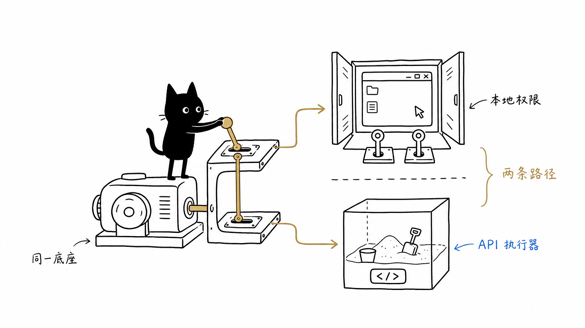
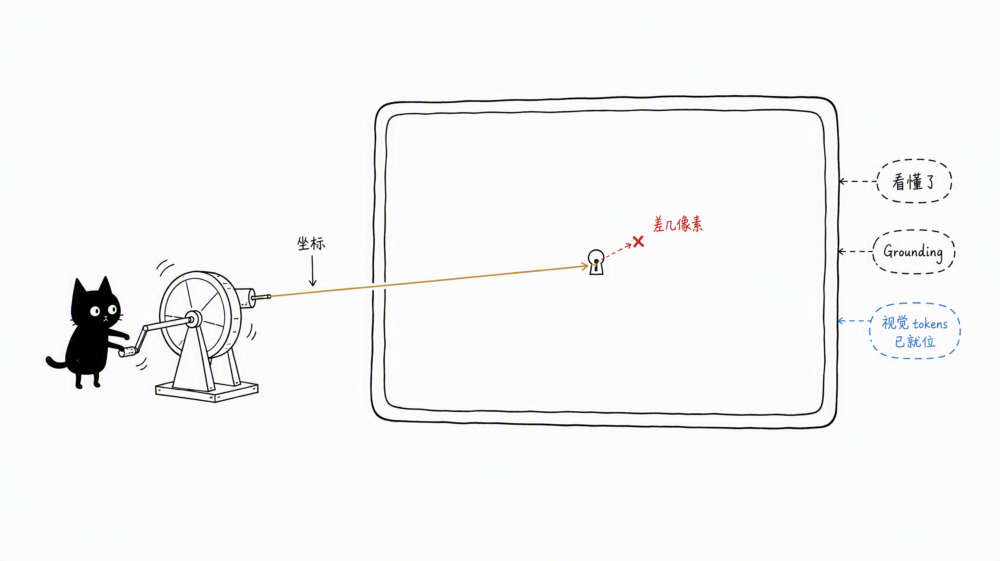

(135, 193)
AI 怎么从
一张截图
点中屏幕？
拆解 OpenAI、Anthropic 与 Google 的底层路线
拆解 OpenAI、Anthropic 与 Google 的底层路线
截图或元素树进入模型，点击、输入、滚动交给客户端执行。


高分辨率降低 Grounding Error，也同步推高视觉 token 成本。
不是路线之争，而是确定性、成本与通用性的调度。
隔离真实账号、文件与凭据
高危操作必须停下来问人
扫描屏幕里的恶意指令
目标不是绝对不被攻破，而是单层失效，损害仍可控。